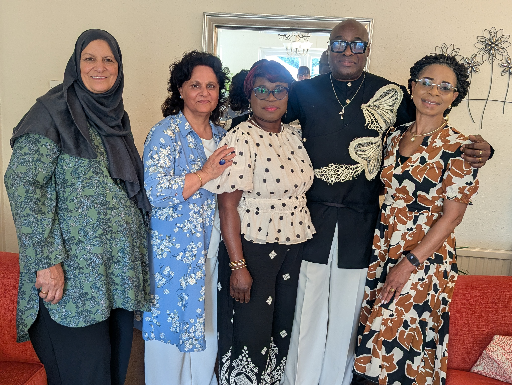
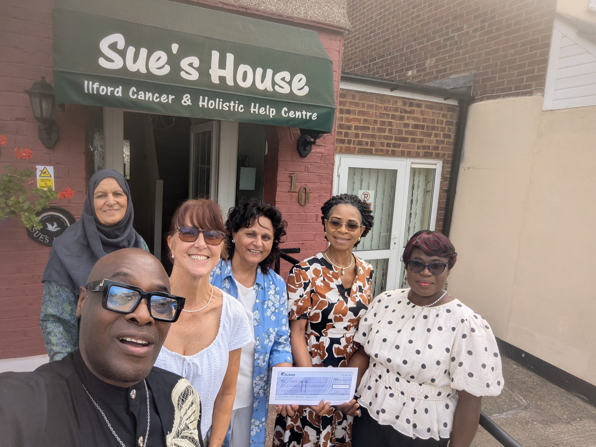

Supporters
Thank you to our supporters
We are grateful to the organisations and individuals who invest in our mission and help make Sue's House a place of comfort, care and practical support for those affected by cancer.

80s Leo visited Sue's House to make a generous contribution of £200 from their organisation, alongside a further £50 donated personally. This thoughtful support reflects the value of community-led giving and recognises the difference made through our work.
We are sincerely grateful for their generosity and for taking the time to acknowledge the care, dedication and hard work happening at Sue's House. We hope to build on this relationship and continue working together in the future.
With thanks
Suhaila
